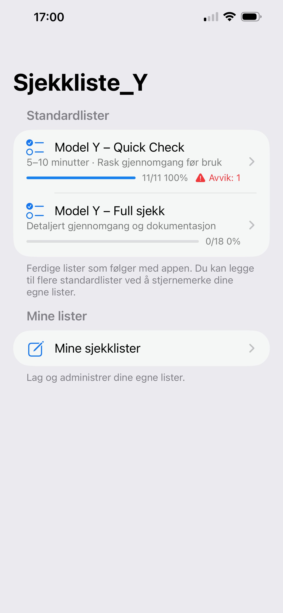

Full kontroll ved overtakelse
Ja, denne sjekklisten er sannsynligvis overkill. Men noen av oss liker det faktisk sånn! 😉
Gå gjennom punkt for punkt, dokumenter avvik med bilder og lag en PDF-rapport – direkte på iPhone.
- Ingen konto
- Ingen innlogging
- Offline
- Alt lagres lokalt
- Delbar rapport

Nytt: statusoversikt og avvik-telling på forsiden.
Nytt i siste versjon
Se fremdrift i % per sjekkliste.
Diskret «Ikke OK»-indikator med antall avvik.
Bedre respons og mindre venting ved åpning av appen.
Hva du kan gjøre i appen
Ferdige sjekklister, Quick Check og full sjekk – og mulighet til å lage egne lister for alt.
Rask gjennomgang på 5–10 minutter.
Detaljert kontroll og dokumentasjon.
Knytt dokumentasjon til hvert punkt.
Lag en ryddig rapport du kan dele eller lagre.
Lag lister for hus, båt, bil, jobb og mer.
Del maler og bruk oppsett fra andre.
Skjermbilder
Sveip på mobil for flere bilder.
Klar for bedre oversikt og dokumentasjon?
Last ned Sjekkliste_Y og kom i gang med ferdige sjekklister – eller bygg dine egne på noen få minutter.